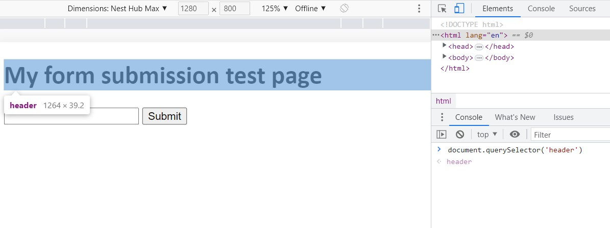
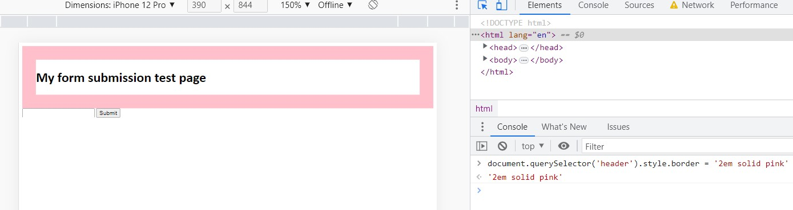

An analogy to describe JS and its relationship to HTML and CSS
HTML: structure of the house - OuteriorCSS: Design of the House - InteriorJavaScript: Making homes convenient for people to use, such as plumbing, drainage, water supply, sewerage, and electricity
HTMLis like a building skeleton. It's the most basic element of making up a website's document, but there's nothing you can do but build a structure.
CSSis the design of a building. You can decide and decorate the building with bricks, plaster, mud, or what colour to make the roof. It will not affect the main structure of the building, but it will affect buyers' choices.
You can live in a building made of HTML and CSS from now on, but there will be a lot of inconveniences in life. You won't be able to use the bathroom because there's no drainage system, and you won't be able to cook because there's no water supply. There will also be a huge emergency where you can't see Netflix because there's no electricity.
To solve these problems, we need JavaScript. JS is making homes convenient for people to use, such as plumbing, drainage, water supply, sewerage, and electricity. It brings the building more convenient to live in and makes people want to live in it.
Explain "control flow" and "loops" using an example process from everyday life, for example. waking up or brushing your teeth
Code flows from top to bottom. A control flowis how the computer runs the code from top to bottom. If you want to put variations into your code, you can use different kinds of control structures including conditionals - if, loops, and functions that make your code active and alive.
A loopis used in JavaScript to perform repeated tasks based on a condition. So depending on the condition that the computer has received from the coder, you will get a different result.

Let me give you an example that you can relate to in real life. To do the laundry,
- Put the laundry in the washing machine.
- Run the washing machine.
- Put the washed laundry in the dryer.
- Remove the dry laundry from the dryer.
- Fold the laundry.
- Organize the folded laundry in the closet.
These six steps are the steps of doing the laundry, and in order to finish this, you have to complete these six steps. If we go from 1 to 2 and then go back to 1 then this task won't be finished and we don't act like that. This is the same as the computer's control flow, and the repetitive behavior up to this 1-6 is loop.
Describe what the DOM is and an example of how you might interact with it

The browser interprets HTML code to create a document that structures and expresses elements in a tree form. This is called Document Object Model a.k.a. DOM, and the browser renders web content on the screen through DOM. DOM is a programming interface that uses programming language like JavaScript to add, modify, and delete content on a web screen, or handle events such as mouse clicks, pop-ups, etc.
Everything that makes up the DOM is known as nodes. Nodes can be:- Elements
- Attributes
- Text content
- Comments
- Document-related stuff
How to interact with DOM
By typing the code into the console, you can read from the DOM and also manipulate the DOM. For example, if you type, document.querySelector('header')into the console, in the Console, HTML will hover over it and you can see what is in the header tag.

And is you copy and paste document.querySelector('header').style.border = '2em solid pink’ into the Console, the pink border appears around the header.
Explain the diffence between accessing data from arrays and objects
Arrays and Objects can both contain multiple values and line up items. But there is a significant difference between these two.
Arrays are a data structure consisting of a collection of elements. It uses zero-based indexing so each value is matched by the index number.
Objects contain value and are referenced by keys. Objects are used to represent a person’s character, the colour of a bird, or the names of friends. So that means it can be defined as any data with a key and "value”. So each value is matched by the key.
Explain what "functions" are and why they are helpful
Functions are like shortcuts to make it easier for coders to command a computer. For instance, you are making a program for a burger place.
You can console.logfor every single action you need to do for making burgers as below.

but what if customers want to change it to a vegetarian option, or what if the they want a set menu? If the function can wrap these actions and is given a name then you can declare the name of making the burger and call it when you need it.

The function is a very useful tool to save time and give a lot of variables.